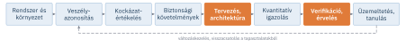
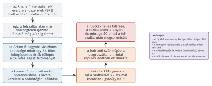
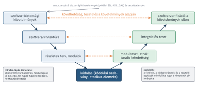
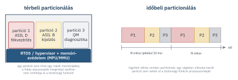
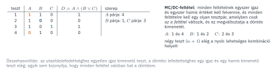

15. A szoftver biztonsága

A mai biztonságkritikus rendszerekben a funkciók egyre nagyobb részét szoftver valósítja meg: a vegyi reaktor biztonsági PLC-je, a jármű fékvezérlője, a robot biztonsági felügyelete, a repülőgép repülésvezérlése. A szoftver nem kopik, nem fárad, és nem hibásodik meg véletlenszerűen; amikor mégis rosszul működik, annak oka mindig a specifikációban, a tervben vagy a kódban rejlő szisztematikus hiba, amely meghatározott körülmények között determinisztikusan előjön (2. fejezet). Ezért a szoftver biztonsága nem meghibásodási rátákkal, hanem a fejlesztési folyamat szigorával, az architektúrával és a verifikációval érhető el. Ebben a fejezetben áttekintjük, miben különbözik a szoftver a hardvertől, mit tanultunk a nagy szoftveres balesetekből, mit írnak elő az ágazati szabványok, és milyen technikák (kódolási szabványok, particionálás, statikus elemzés, strukturális lefedettség, formális módszerek) támogatják a biztonságos szoftver fejlesztését.
A fejezet végére képes leszel
- megmagyarázni, miért nem jellemezhető a szoftver megbízhatósága a hardveréhez hasonló meghibásodási rátával, és miért nem igazolható nagyon kis hibagyakoriság pusztán teszteléssel;
- a nagy szoftveres balesetek (Ariane 5, Therac-25, Boeing 737 MAX) tanulságait a szoftver-életciklus lépéseihez kötni;
- összevetni az IEC 61508-3, az ISO 26262-6, a DO-178C és a rokon szabványok fő követelményeit;
- kiválasztani a megfelelő kódolási, architekturális és verifikációs technikákat egy adott integritási szinthez;
- kiszámolni egy döntés MC/DC-lefedettségéhez szükséges teszteket;
- értékelni a formális módszerek, a meglévő szoftverek és a fejlesztőeszközök szerepét a biztonsági igazolásban.
15.1. Miben más a szoftver?
A hardver meghibásodását fizikai folyamatok okozzák (kopás, öregedés, igénybevétel), ezért statisztikailag leírható, és a redundáns elemek nagyrészt egymástól függetlenül hibásodnak meg. A szoftver hibája ezzel szemben a gyártás pillanatától jelen van minden példányban, és ugyanazon bemenetre mindig ugyanúgy jelentkezik. Néhány következmény:
- A homogén redundancia nem véd. Két azonos szoftvert futtató csatorna ugyanott hibázik, ahogy az Ariane 5 két inerciális referenciarendszerénél történt (15.2.1. szakasz).
- Nincs folytonosság. Egy mechanikus szerkezet kis terhelésváltozásra kis deformációval felel; egy programban egyetlen bit eltérése teljesen más viselkedést okozhat. Ezért a szoftvernél nem lehet néhány pontban tesztelni, és a többit „interpolálni”.
- A bonyolultság nem látszik. A szoftver állapottere a változók számával exponenciálisan nő, és a fizikai korlátok, amelyek a hardver bonyolultságát természetes módon fékezik, itt hiányoznak.
- A tesztelés korlátos. Ahogy Dijkstra megfogalmazta: a tesztelés a hibák jelenlétét mutathatja ki, a hiányukat nem.
Az utolsó pontot kvantitatívan is meg lehet fogalmazni. Butler és Finelli kimutatta, hogy egy repülésvezérlő szoftver \(10^{-9}\) óránkénti hibagyakoriságát teszteléssel igazolni több mint százezer évnyi, reprezentatív üzemi körülmények közötti hibamentes futtatást igényelne (Butler és Finelli 1993). Littlewood és Strigini bayesi elemzése szerint a tesztelésből és az üzemi tapasztalatból reálisan csak mérsékelt megbízhatóság igazolható; a nagyon nagy megbízhatóság állítása mindig a fejlesztési folyamatra, az architektúrára és a formális érvelésre is épül (Littlewood és Strigini 1993). Ugyanez a gondolatmenet ismétlődik ma az automatizált járműveknél: Kalra és Paddock szerint a balesetek gyakoriságának statisztikailag megalapozott összevetéséhez több száz millió mérföld vezetés kellene (18. fejezet) (Kalra és Paddock 2016).
Ezért a szabványok a szoftvernél nem PFD-t vagy PFH-t, hanem folyamat- és termékkövetelményeket írnak elő, amelyek szigora az integritási szinttel nő. A SIL, az ASIL vagy a DAL a szoftvernél azt határozza meg, milyen módszereket kell alkalmazni, milyen részletességű dokumentációt kell készíteni, és milyen függetlenséggel kell ellenőrizni a munkát.
15.2. Tanulságok a nagy szoftveres balesetekből
15.2.1. Ariane 5, 501-es repülés (1996)
Az 1. fejezetben bemutatott balesetek közül három a szoftver szerepe szempontjából különösen tanulságos; itt ezeket a szoftver-életciklus szemszögéből elemezzük. Az Ariane 5 1996-os első repülése mintegy negyven másodperccel a felszállás után ért véget. A vizsgálóbizottság jelentése a hibaláncot pontosan rekonstruálta (15.1. ábra) (Lions 1996). Az inerciális referenciarendszer szoftverét az Ariane 4-ből vették át. Egy igazítási funkció, amelyre a felszállás után már nem volt szükség, még negyven másodpercig futott. Az Ariane 5 nagyobb vízszintes sebessége miatt egy 64 bites lebegőpontos érték 16 bites egész számmá alakítása túlcsordult. A konverziót nem védték, mert az Ariane 4 pályáján ez nem fordulhatott elő; a kivételkezelés pedig, amely hardverhibát feltételezett, leállította a számítógépet. A tartalék rendszer ugyanazzal a szoftverrel néhány tized másodperccel korábban ugyanígy leállt. A fedélzeti számítógép a leállt rendszer diagnosztikai adatait repülési adatnak értelmezte, és teljesen kitérítette a fúvókákat.

A tanulságok általánosak: az újrafelhasználás nem mentesít az igazolás alól, mert a követelmények az új környezetben mások lehetnek; a homogén redundancia nem véd a szoftverhiba ellen; a kivételkezelés feltevései (itt: minden hiba hardverhiba) maguk is hibásak lehetnek; és a szükségtelen funkciók szükségtelen kockázatot hordoznak.
15.2.2. Therac-25 (1985–1987)
A Therac-25 sugárterápiás gyorsítóval (1. fejezet) 1985 és 1987 között hat ismert baleset történt, amelyekben a betegek a tervezett dózis sokszorosát kapták, súlyos sérüléseket és haláleseteket okozva (Leveson és Turner 1993). Az elődmodellekben hardveres reteszek akadályozták meg a veszélyes üzemállapotokat; a Therac-25-ben ezeket elhagyták, és a biztonságot teljesen a szoftverre bízták. A szoftverben versenyhelyzet (race condition) volt: ha a kezelő gyakorlott gyorsasággal módosította a beállításokat, a gép a módosítás előtti és utáni beállítások veszélyes keverékével sugárzott. Egy másik hiba egy egybájtos számláló túlcsordulásából eredt. A hibaüzenetek érthetetlenek voltak, a kezelők megszokták, hogy figyelmen kívül hagyják őket, és a gyártó az első jelzések után sokáig nem hitte el, hogy a szoftver hibás lehet.
A Therac-25 a szoftverbiztonság tankönyvi esete lett: a szoftver nem helyettesítheti a független védelmeket, a régi kód új környezetben új hibákat hozhat elő, az ember–gép felület a biztonsági rendszer része (16. fejezet), és a balesetek kivizsgálása a szervezet kultúráján is múlik.
15.2.3. Boeing 737 MAX (2018–2019)
A Lion Air 610-es (2018) és az Ethiopian Airlines 302-es járatának (2019) katasztrófájában (1. fejezet) összesen 346 ember halt meg. Mindkét esetben a manőverezési jellemzőket javító rendszer (MCAS) egyetlen, hibás állásszög-érzékelő jele alapján ismételten orrnehéz irányba trimmelte a gépet. A független vizsgálatok szerint az MCAS jogosultságát a fejlesztés késői szakaszában jelentősen megnövelték, de a biztonsági értékelést nem frissítették ennek megfelelően; a rendszer egyetlen érzékelőre támaszkodott, és a biztonsági értékelés olyan pilótareakciókat feltételezett, amelyek több egyidejű figyelmeztetés mellett nem voltak reálisak (Joint Authorities Technical Review 2019).
Ez a baleset már nem programozási hibáról szól: a szoftver azt tette, amit a követelmények szerint tennie kellett. A hiba a követelményekben, a rendszerszintű biztonsági elemzésben, a változáskezelésben és az emberi teljesítményre vonatkozó feltevésekben volt. Leveson régóta hangsúlyozza, hogy a szoftverrel kapcsolatos balesetek döntő többsége a hibás vagy hiányos követelményekre vezethető vissza, nem a kódolási hibákra (Leveson 2011). Lutz a NASA űrszondáinak szoftverhibáit elemezve hasonlóra jutott: a biztonsági szempontból lényeges hibák többnyire a követelmények félreértéséből és az interfészekből eredtek (Lutz 1993). A szoftverbiztonság ezért a rendszerszintű veszélyelemzéssel kezdődik (5. és 7. fejezet).
15.3. A szabványok követelményei
Az ágazati szoftverszabványok közös szerkezetűek: egy életciklus-modellt írnak elő, amelynek minden lépéséhez követelményeket, módszereket és ellenőrzési tevékenységeket rendelnek, és ezek szigorát az integritási szinthez kötik (15.2. ábra). A legfontosabbak:
- IEC 61508-3: az általános szabvány szoftverrésze. Részletes táblázatokban minden SIL-hez ajánlott (R) vagy erősen ajánlott (HR) technikákat ad a követelményektől a verifikációig; ha egy erősen ajánlott technikát nem alkalmaznak, azt indokolni kell (IEC 2010).
- IEC 61511: a folyamatipari alkalmazási szoftvert szabályozza, és megkülönbözteti a rögzített programú nyelveket (csak paraméterezés), a korlátozott változékonyságú nyelveket (például funkcióblokk-diagram a biztonsági PLC-ben) és a teljes változékonyságú nyelveket (általános programozási nyelvek); az utóbbiakra az IEC 61508-3 vonatkozik (IEC 2016).
- ISO 26262-6: a közúti járművek szoftverfejlesztése ASIL-ekhez kötött módszertáblázatokkal; a 9. rész a különböző ASIL-ű szoftverelemek együttélésének (freedom from interference) követelményeit is rögzíti (ISO 2018).
- DO-178C: a repülés szoftverszabványa öt fejlesztési biztosítottsági szinttel (DAL A–E). Nem módszereket, hanem célkitűzéseket ír elő: az A szinten 71, a B szinten 69, a C szinten 62, a D szinten 26 célkitűzést kell teljesíteni, egyre több közülük függetlenséggel (RTCA 2011a). Kiegészítései a formális módszerekre (DO-333) és a modellalapú fejlesztésre vonatkoznak (RTCA 2011b).
- EN 50716: a vasúti szoftverfejlesztés szabványa, amely 2023-ban váltotta fel az EN 50128-at és az EN 50657-et (CENELEC 2023).
- IEC 62304: az orvostechnikai szoftverek életciklusa, a lehetséges sérülés súlyossága szerinti A, B és C szoftverbiztonsági osztállyal, az ISO 14971 kockázatkezelési folyamatához kapcsolódva (IEC 2006).

A szabványokban közös a kétirányú követhetőség: minden rendszerszintű biztonsági követelményhez követhetően tartozik szoftverkövetelmény, minden szoftverkövetelményhez terv- és kódelem, valamint teszteset, és fordítva, minden kódrészletnek valamelyik követelményből kell erednie. Ez egyszerre biztosítja, hogy semmi ne maradjon ki, és hogy ne kerüljön a szoftverbe nem szándékolt funkció (ami az Ariane 5 igazítási funkciójának esete volt).
15.4. Architektúra: particionálás és vegyes kritikusság
A modern beágyazott rendszerekben egyetlen processzoron különböző integritású szoftverek futnak: egy járművezérlő egységen a fékvezérlés (ASIL D) mellett diagnosztika és kijelzés (QM vagy alacsony ASIL). Ha a kevésbé gondosan fejlesztett szoftver felülírhatja a biztonsági funkció memóriáját vagy elveheti a processzoridejét, az egész egység a legalacsonyabb integritású elem szintjére süllyed. A megoldás a particionálás (15.3. ábra):
- térbeli particionálás: a memóriavédelmi egység (MPU vagy MMU) és a valós idejű operációs rendszer vagy hypervisor biztosítja, hogy egy partíció ne írhasson a másik memóriájába;
- időbeli particionálás: minden partíció rögzített időrést kap, így egy végtelen ciklusba került partíció sem veheti el a biztonsági funkció idejét.

A repülésben az integrált moduláris avionika és az ARINC 653 szabvány, a járműiparban az AUTOSAR és az ISO 26262-6 és -9 követelményei szabályozzák ezt (ISO 2018). A particionálás mellett a jó biztonsági architektúra egyéb elvei: modularitás és egyszerű interfészek; a biztonsági funkciók elkülönítése a nem biztonságiaktól; a hibák terjedésének korlátozása; a defenzív programozás (a bemenetek és a köztes eredmények ellenőrzése); és a 14.6. szakaszban látott diverz felügyelet.
15.5. Kódolás és statikus elemzés
A biztonságkritikus szoftvereket olyan nyelvi részhalmazban írják, amely kizárja a nem definiált vagy nehezen elemezhető konstrukciókat. A C nyelvre a MISRA C irányelvei a legelterjedtebbek, legújabb kiadása a MISRA C:2025 (MISRA 2025). Ezek többek között tiltják vagy korlátozzák a dinamikus memóriafoglalást, a rekurziót, a nem definiált viselkedést okozó műveleteket és az implicit típuskonverziókat; az Ariane 5 hibája éppen egy nem védett típuskonverzió volt. Hasonló szerepet töltenek be a MISRA C++ és a CERT C irányelvei, a repülésben pedig az Ada és annak formálisan ellenőrizhető részhalmaza, a SPARK.
A statikus elemzés a kód futtatása nélkül vizsgálja a programot. Az egyszerű eszközök a kódolási szabályok megsértését keresik, a fejlettebbek, például az absztrakt interpretáción alapuló elemzők, matematikai bizonyosságot adnak bizonyos hibaosztályok (nullával osztás, túlcsordulás, tömbtúlindexelés, inicializálatlan változó) hiányáról. Az Astrée elemzővel így igazolták, hogy az Airbus repülésvezérlő szoftvereinek kódjában nincsenek futásidejű hibák (Delmas és Souyris 2007). Az ilyen elemzés olyan bizonyosságot ad, amelyet a tesztelés sosem adhatna: minden lehetséges bemenetre érvényes.
15.6. Tesztelés és strukturális lefedettség
A biztonságkritikus szoftver tesztelése követelményalapú: minden teszteset egy követelmény ellenőrzésére szolgál, és a követelmények normál és határesetei, valamint az érvénytelen bemenetek is lefedendők. A strukturális lefedettség mérése ezután megmutatja, hogy a követelményalapú tesztek a kód mely részeit futtatták meg. A le nem fedett kód vagy hiányzó követelményre (és tesztre), vagy nem szándékolt funkcióra, vagy halott kódra utal; mindhárom eset vizsgálatot igényel.
A lefedettségi mértékek egyre szigorúbbak (Hayhurst és mtsai. 2001):
- utasításlefedettség: minden utasítás legalább egyszer lefut;
- döntési lefedettség: minden döntés (elágazás) igaz és hamis kimenete is előfordul;
- módosított feltétel/döntés lefedettség (modified condition/decision coverage, MC/DC): ezen felül minden döntés minden feltételéről ki kell mutatni, hogy önállóan, a többi feltétel rögzítése mellett befolyásolja a döntés kimenetét.
Az MC/DC a repülésben a DAL A szoftver követelménye, a döntési lefedettség a DAL B-é, az utasításlefedettség a DAL C-é (RTCA 2011a). Az ISO 26262-6 az ASIL D egységtesztjénél erősen ajánlja az MC/DC-t, az ASIL B és C szinten a döntési lefedettséget (ISO 2018). Az MC/DC előnye, hogy \(n\) feltételhez már \(n + 1\) teszttel elérhető, szemben a \(2^n\) kombináció kimerítő tesztelésével, mégis kimutatja, ha egy feltétel hatását a kód rosszul valósítja meg (15.4. ábra).

Egy reteszfeltétel: a robot csak akkor indulhat, ha az ajtó zárva van (\(A\)), és vagy a kezelő a biztonsági zónán kívül van (\(B\)), vagy a robot csökkentett sebességű üzemmódban van (\(C\)). A döntés \(D = A \wedge (B \vee C)\). Az MC/DC-tesztek (15.4. ábra): (1) \(A=1, B=1, C=0 \Rightarrow D=1\); (2) \(A=1, B=0, C=0 \Rightarrow D=0\); (3) \(A=1, B=0, C=1 \Rightarrow D=1\); (4) \(A=0, B=1, C=0 \Rightarrow D=0\). Az 1–4 pár mutatja \(A\), az 1–2 pár \(B\), a 2–3 pár \(C\) önálló hatását. Ha a programozó elfelejtette a \(C\) feltételt (\(D = A \wedge B\)), a (3)-as teszt hibát mutat (az elvárt 1 helyett 0-t ad). Döntési lefedettséghez viszont az (1) és a (2) teszt is elég volna, és egyik sem venné észre a hiányzó feltételt. Az MC/DC sem tévedhetetlen: ha a programozó a műveleti sorrendet tévesztette el, és \((A \wedge B) \vee C\)-t írt, mind a négy teszt átmegy, mert a hiba csak az \(A=0, B=0, C=1\) bemenetnél jelentkezik. A strukturális lefedettség tehát a tesztkészlet elégtelenségét mutatja ki, a kód helyességét nem bizonyítja; a felülvizsgálat és a statikus elemzés ezért elengedhetetlen kiegészítése.
A lefedettség szükséges, de nem elégséges feltétel: a 100%-os MC/DC sem bizonyítja, hogy a követelmények helyesek, vagy hogy a program időzítése és erőforrás-használata megfelelő. Ezért a biztonságkritikus szoftver verifikációja a tesztelés mellett a legrosszabb futási idő elemzését, a veremhasználat elemzését, a felülvizsgálatokat és a statikus elemzést is magában foglalja.
15.7. Formális módszerek
A formális módszerek a követelményeket és a tervet matematikai nyelven írják le, és a tulajdonságokat (például „a két gyorszáró szelep sosem kap egyszerre nyitási parancsot, ha a hőmérséklet a határ fölött van”) matematikai bizonyítással vagy kimerítő állapottér-bejárással ellenőrzik. Két fő águk a modellellenőrzés (model checking), amely egy véges állapotú modell minden lehetséges viselkedését automatikusan bejárja, és ellenpéldát ad, ha egy tulajdonság sérül; és a tételbizonyítás, amely interaktívan, gépi ellenőrzés mellett igazolja, hogy a program megfelel a specifikációnak.
A formális módszerek ipari alkalmazása az elmúlt évtizedekben kinőtte a kutatási kuriózum státuszt. A párizsi 14-es, vezető nélküli metróvonal biztonságkritikus szoftverét a B-módszerrel fejlesztették, és a bizonyított részekben a későbbi validálás és üzemeltetés során sem találtak hibát (Behm és mtsai. 1999). A seL4 mikrokernel az első általános célú operációsrendszer-mag, amelynek funkcionális helyességét teljes körű gépi bizonyítás igazolja (Klein és mtsai. 2009). Az Amazon Web Services a TLA+ specifikációs nyelvvel olyan tervezési hibákat talált elosztott rendszereiben, amelyeket a tesztelés és a felülvizsgálat nem tárt fel (Newcombe és mtsai. 2015). A DO-333 kiegészítés a repülésben lehetővé teszi, hogy a formális bizonyítás bizonyos tesztelési célkitűzéseket kiváltson (RTCA 2011b).
A formális módszereknek is vannak korlátai: a bizonyítás csak a specifikációhoz képest igazolja a helyességet, és ha a specifikáció hibás (mint a 737 MAX esetében a követelmények), a bizonyítás sem segít. A modellellenőrzés pedig az állapotrobbanás miatt nagy rendszereknél csak absztrakciókkal alkalmazható. Leginkább a kritikus magok (protokollok, reteszlogika, ütemezés, felügyeleti funkciók) igazolására érdemes őket használni.
15.8. Meglévő szoftverek, eszközök és konfigurációk
A biztonságkritikus termékek ritkán épülnek teljesen saját fejlesztésű szoftverből. Operációs rendszerek, kommunikációs könyvtárak, nyílt forrású komponensek és korábbi termékekből átvett modulok egyaránt előfordulnak. Ezek felhasználhatósága a szabványok szerint igazolható a megfelelő fejlesztési folyamattal (ha a dokumentáció rendelkezésre áll), az üzemi tapasztalattal (ha a korábbi használat körülményei, a változatok és a meghibásodások dokumentáltak) vagy az elem körüli védelmekkel (például a kimenet független felügyeletével) (IEC 2010). Az orvostechnikában az ismeretlen eredetű szoftver (software of unknown provenance, SOUP) kockázatait külön kell értékelni (IEC 2006). Az Ariane 5 tanulsága szerint az üzemi tapasztalat csak akkor érvényes, ha az új alkalmazás bemeneti tartománya és környezete a korábbiéval azonos.
A fejlesztőeszközök (fordítók, kódgenerátorok, statikus elemzők, tesztelő eszközök) maguk is hibát vihetnek a termékbe, vagy elrejthetik a hibákat. Az ISO 26262-8 az eszköz hatása és a hibái felderíthetősége alapján eszközbizalmi szintet rendel hozzájuk, és ennek megfelelően kell minősíteni őket vagy a kimenetüket ellenőrizni (ISO 2018); a repülésben a DO-178C kiegészítése szabályozza az eszközminősítést. Végül a konfiguráció és a paraméterek (határértékek, időzítések, mértékegységek) a szoftver részei: egy rosszul beállított kioldási határérték ugyanolyan veszélyes, mint egy programhiba, ezért ezek is a változáskezelés és a verifikáció hatálya alá tartoznak.
A ReaktorVéd biztonsági logikáját a tanúsított PLC korlátozott változékonyságú nyelvén, tanúsított funkcióblokkokból építik fel (1oo2 szavazás a távadókra, időkésleltetés, kiiktatáskezelés, a szelepek kimenetei). Az IEC 61511 szerinti fő lépések: az alkalmazási program követelményei a biztonsági követelményspecifikációból erednek; a programot felülvizsgálják és szimulációval tesztelik; a gyári átvételi teszt minden ok–okozati kapcsolatot ellenőriz; a változtatásokat a változáskezelési eljárás szerint engedélyezik és újratesztelik (IEC 2016). A tipikus hibák nem a funkcióblokkokban, hanem az alkalmazásban vannak: rossz mértékegység (°C helyett K), felcserélt kimenetek, olyan kiiktatás, amely karbantartás után bekapcsolva marad, vagy egy időkésleltetés, amely a folyamatbiztonsági időnél hosszabb. A gyári és a helyszíni átvételi teszt ezért a teljes jellistát és minden kiiktatást lefed.
A vészfékező asszisztens szoftvere két, eltérő jellegű részből áll. A döntési és beavatkozási lánc (a fékigény kiszámítása, a téves fékezés elleni felügyelet, a kommunikáció a fékrendszerrel) hagyományos, ASIL szerint fejlesztett szoftver: követelményalapú tesztelés, MC/DC-lefedettség a legmagasabb ASIL-ű részeken, particionálás a többi funkciótól. Az érzékelési lánc (a tárgyak felismerése a kamera képéből) viszont gyakran gépi tanulásra épül, amelynek viselkedése nem vezethető vissza egyenként megírt követelményekre, és a hagyományos lefedettségi mértékek sem értelmezhetők rá. Ennek biztonsága a rendeltetésszerű funkció biztonságának (ISO 21448) és a mesterséges intelligencia biztonsági szabványainak tárgya (18. fejezet). Az architektúra ezért gyakran egy egyszerű, hagyományos módon igazolható felügyeletet tesz a gépi tanulási komponens mellé, amely a fizikailag nem plauzibilis döntéseket kiszűri.
- A szoftver hibái szisztematikusak; a szoftver nem jellemezhető a hardveréhez hasonló meghibásodási rátával, és a nagyon kis hibagyakoriság teszteléssel nem igazolható.
- A nagy szoftveres balesetek (Ariane 5, Therac-25, 737 MAX) többnyire a követelményekből, az újrafelhasználás feltevéseiből, a független védelmek hiányából és a rendszerszintű elemzés hiányosságaiból fakadtak, nem a kódolásból.
- Az ágazati szabványok az integritási szinttől függő szigorú életciklust, módszereket és független ellenőrzést írnak elő; közös elvük a kétirányú követhetőség.
- A particionálás teszi lehetővé, hogy különböző integritású szoftverek egy processzoron fussanak.
- A kódolási szabványok (MISRA C:2025) és a statikus elemzés egész hibaosztályokat zárnak ki; az absztrakt interpretáció a futásidejű hibák hiányát is bizonyíthatja.
- A követelményalapú tesztelést strukturális lefedettség egészíti ki; az MC/DC \(n\) feltételhez \(n+1\) teszttel ellenőrzi minden feltétel önálló hatását.
- A formális módszerek a kritikus magok helyességét matematikai bizonyossággal igazolhatják, de csak a specifikációhoz képest.
- A meglévő szoftverek, a fejlesztőeszközök és a konfigurációs adatok is az igazolás tárgyai.
- Miért nem javítja a szoftverhibák elleni védelmet, ha ugyanazt a programot két processzoron futtatjuk? Milyen hibák ellen véd mégis ez az elrendezés?
- Hány teszt kell az \(A \wedge B \wedge C\) döntés MC/DC-lefedettségéhez? Add meg őket!
- Miért nem elég a 100%-os utasításlefedettség egy biztonsági funkció szoftverének igazolásához?
- Egy beszállító azt állítja, hogy a szoftvere tíz év alatt több ezer berendezésben hibátlanul működött, ezért SIL 3-as alkalmazásban is használható. Milyen kérdéseket tennél fel?
- Mi a közös az Ariane 5 és a Boeing 737 MAX balesetében a szoftver szempontjából, és mi a különbség?
Megoldás
- Mert a szoftverhiba mindkét példányban ott van, és ugyanazon bemenetre mindkettő ugyanúgy hibázik (közös okú hiba). Az elrendezés a véletlenszerű hardverhibák és az átmeneti hibák (például sugárzás okozta bitváltás) ellen véd, ha a két csatorna eredményét összehasonlítják.
- Négy teszt: \((1,1,1) \Rightarrow 1\), valamint \((0,1,1)\), \((1,0,1)\) és \((1,1,0)\), mindegyik \(\Rightarrow 0\). Mindegyik feltételre az első teszt és a hozzá tartozó, csak abban a feltételben eltérő teszt alkot párt.
- Mert csak azt mutatja, hogy minden utasítás lefutott, azt nem, hogy minden döntés mindkét kimenete és minden feltétel hatása ellenőrzött; és semmit sem mond a követelmények helyességéről, az időzítésről, a hiányzó funkciókról vagy a nem szándékolt viselkedésről.
- Ugyanabban a változatban futott-e a szoftver? Hasonló volt-e az alkalmazás, a bemeneti tartomány, a környezet és a használati mód? Hogyan gyűjtötték és elemezték a meghibásodásokat, és ki ellenőrizte ezt? Mennyi az összes üzemóra, és ebből milyen konfidenciával mekkora hibagyakoriság állítható? Ismertek-e a szoftver fejlesztési folyamata és dokumentációja? Az IEC 61508 üzemi tapasztalatra vonatkozó követelményei mindezek dokumentálását kívánják.
- Mindkettőben a szoftver a specifikációja szerint működött, és a hiba a rendszerszintű feltevésekben volt. Az Ariane 5-nél a hiba egy újrafelhasznált modul feltevéseiben (az Ariane 4 pályája) és a nem védett konverzióban rejlett, a homogén redundancia pedig nem védett ellene. A 737 MAX-nál a követelmények, a változáskezelés, az egyetlen érzékelőre épülő kialakítás és a pilótareakciókra vonatkozó feltevések voltak hibásak.
- Leveson, N. G. (2011): Engineering a Safer World. MIT Press – a szoftver szerepe a balesetekben és a követelmények elsődlegessége (Leveson 2011).
- Lions, J.-L. (1996): ARIANE 5 Flight 501 Failure: Report by the Inquiry Board. ESA (Lions 1996); Leveson, N. G., Turner, C. S. (1993): An investigation of the Therac-25 accidents. IEEE Computer (Leveson és Turner 1993).
- Butler, R. W., Finelli, G. B. (1993): The infeasibility of quantifying the reliability of life-critical real-time software. IEEE TSE (Butler és Finelli 1993).
- Hayhurst, K. J. et al. (2001): A Practical Tutorial on Modified Condition/Decision Coverage. NASA (Hayhurst és mtsai. 2001).
- IEC 61508-3, ISO 26262-6, DO-178C, EN 50716, IEC 62304 – az ágazati szoftverszabványok (IEC 2010, 2006; ISO 2018; RTCA 2011a; CENELEC 2023).